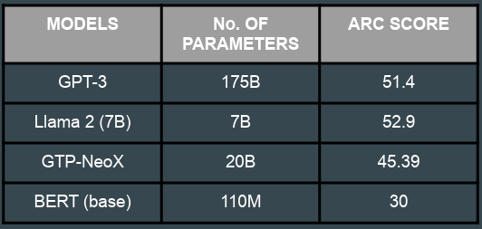
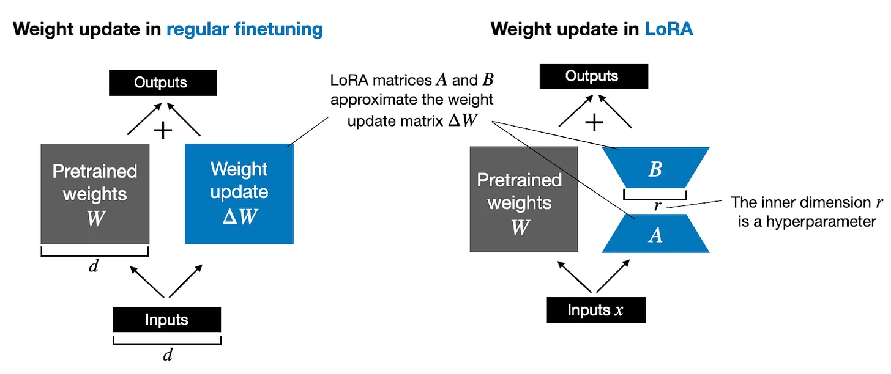
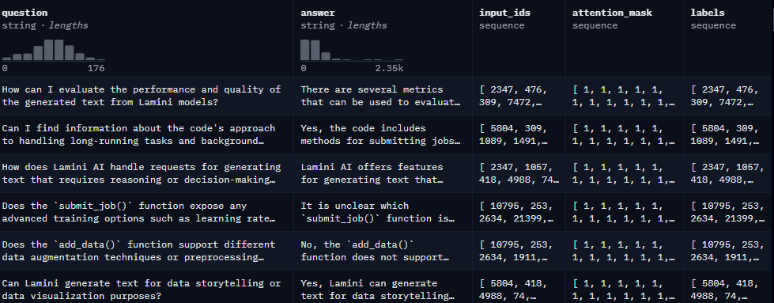
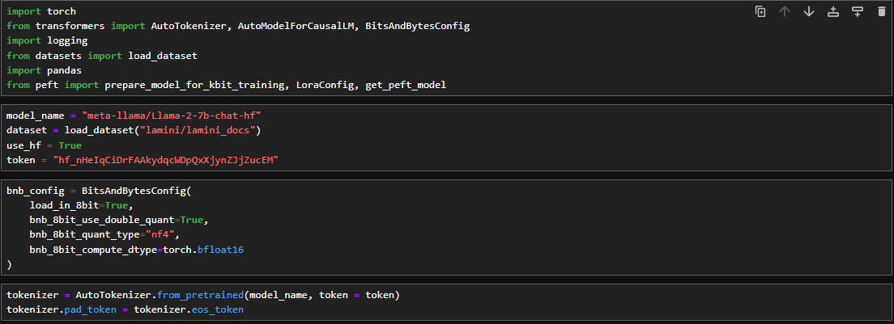
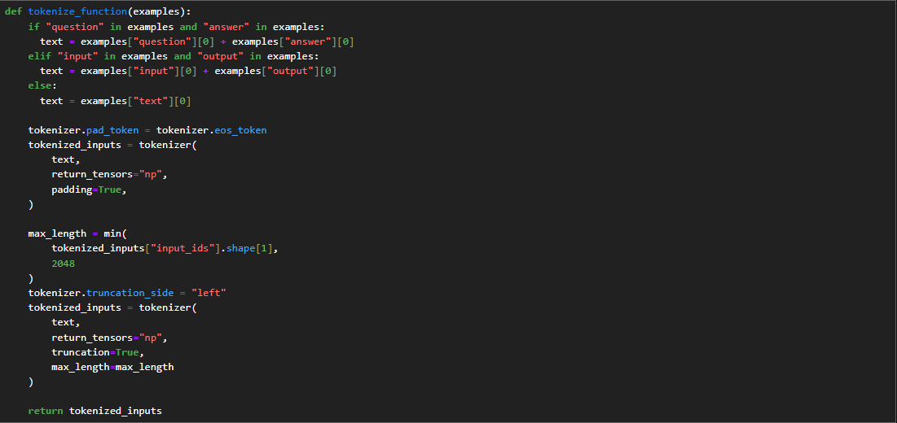
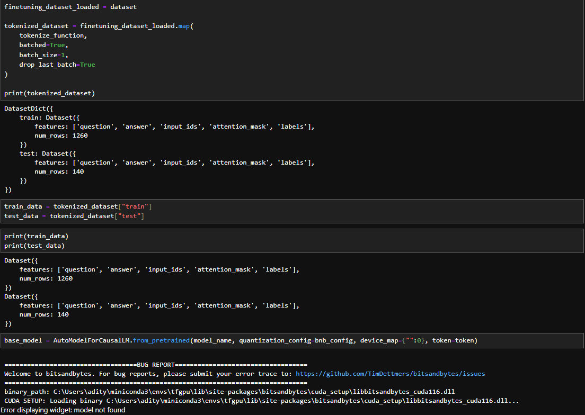
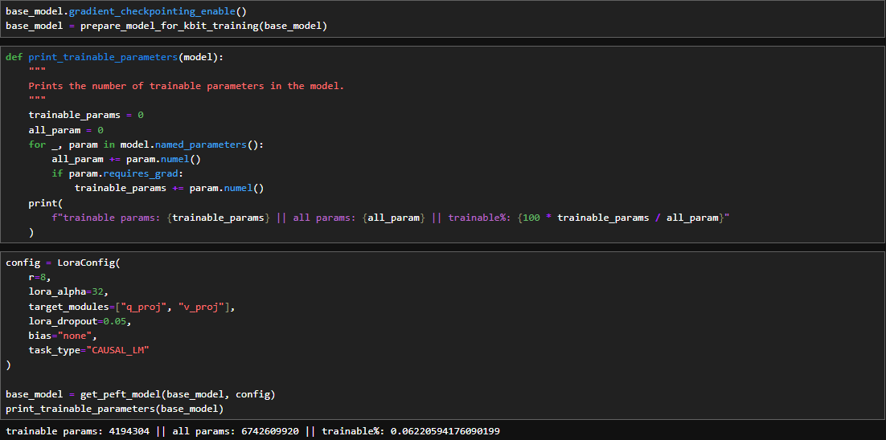
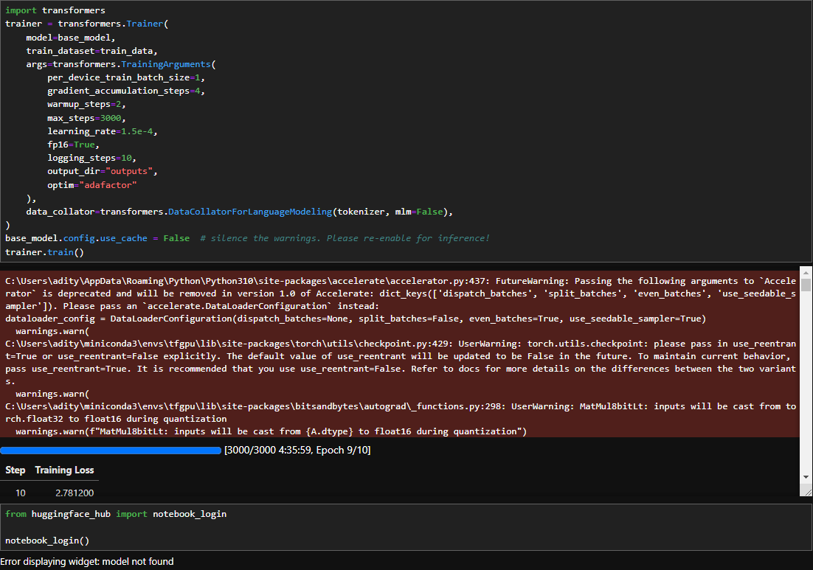

Aditya Singh

Introduction
Integrating Large Language Models (LLMs) as customer support agents offers businesses notable advantages, including enhanced efficiency through the automation of routine queries, 24/7 availability, scalability, consistent responses, multilingual support, and quick response times. LLMs contribute to improved customer satisfaction by addressing inquiries promptly and maintaining a high level of knowledge retention. However, considerations such as the potential challenges in handling complex queries and emotionally charged interactions, ethical use and bias mitigation, the necessity of human oversight for quality assurance, and the importance of continuous improvement through updates and fine-tuning are crucial for a successful deployment. Striking a balance between the capabilities of LLMs and the essential human touch ensures a comprehensive and effective customer support strategy.
Model Selection
I compared some popular LLM models such as GPT-3, Llama-2, GPT-NeoX and BERT. The models were compared according to
their results in the ARC benchmark. Considering the computational limitations of my NVIDIA RTX 3060(12 GB) and Ryzen 5600
I decided to use the Llama 2 (7B) model for implementation in light of the computing limitations and the ARC scores.

However, the model remained too large to adjust locally on the device. To solve this issue, I made use of LoRA and PEFT.
LoRA
Large language models are large, and it can be expensive to update all model weights during training due to GPU memory limitations.
For example, suppose we have an LLM with 7B parameters represented in a weight matrix W. (In reality, the model parameters are, of course, distributed across different matrices in many layers,
but for simplicity, we refer to a single weight matrix here). During backpropagation, we learn a ΔW matrix, which contains information on how much we want to update the original weights to minimize the loss function during training.
The weight update is then as follows:
W_updated = W + ΔW
If the weight matrix W contains 7B parameters, then the weight update matrix ΔW also contains 7B parameters, and computing the matrix ΔW can be very compute and memory intensive.
The LoRA method proposed by Hu et al. replaces to decompose the weight changes, ΔW, into a lower-rank representation. To be precise,
it does not require to explicitly compute ΔW. Instead, LoRA learns the decomposed representation of ΔW directly during training which is where the savings are coming from, as shown in the figure below.

As illustrated above, the decomposition of ΔW means that we represent the large matrix ΔW with two smaller LoRA matrices, A and B. If A has the same number of rows as ΔW and B has the same number of columns as ΔW, we can write the decomposition as ΔW = AB. (AB is the matrix multiplication result between matrices A and B.)
PEFT
Fine-tuning large pretrained models is often prohibitively costly due to their scale. Parameter-Efficient Fine-Tuning (PEFT) methods enable efficient adaptation of large pretrained models to various downstream applications by only fine-tuning a small number of (extra) model parameters instead of all the model's parameters. This significantly decreases the computational and storage costs. Recent state-of-the-art PEFT techniques achieve performance comparable to fully fine-tuned models.
Dataset
The dataset used for fine tuning is the “lamini/lamini_docs” dataset by Lamini on huggingface. The dataset consist of questions and answers about the company Lamini. It has a train-test split with 1,260 rows in the train data and 140 rows in the test data. 
Fine-tuning Llama-2
Initializing the requirements
In this section we import the required libraries and initialize the base model along with its tokenizer and a BitsandBytes config.
Given below is the python code for fine tuning Llama-2. In the code token = "Your_Token" replace "Your_Token" with your access token.

Loading and Preparing the dataset
 Preparing the model for training
By using PEFT and LoRA we only need to train 4194304 of the total 6742609920 parameters, i.e. we only need to train 6.22%% of the total parametes
Training the model
This fine-tuned model can be found on "AdityaSingh312/Llama-7b-lamini-docs" for use.